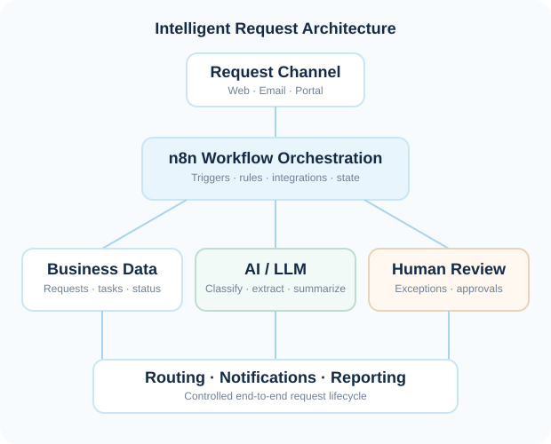
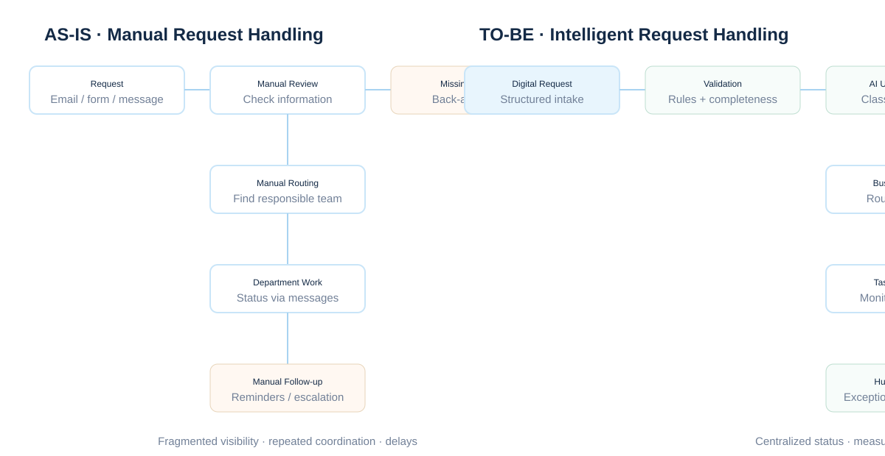
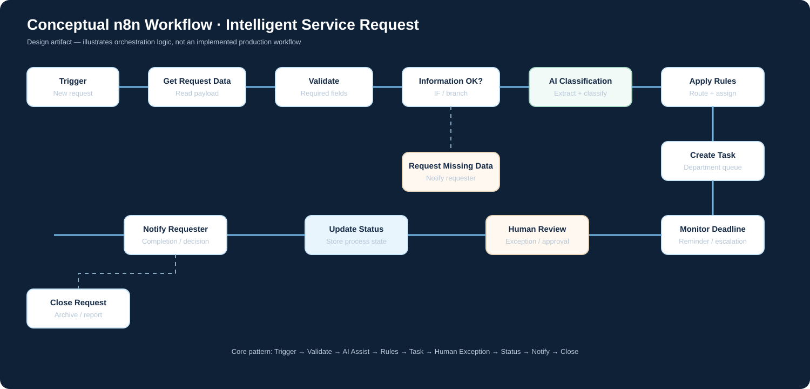

Manual validation
Employees check whether information and documents are complete before processing can continue.
CASE STUDY 04 · PROCESS AUTOMATION
A generalized service-request transformation case study based on organizational service processes. The design combines workflow automation, selective AI, business rules, and human oversight to move requests from intake to resolution with greater consistency and visibility.

BUSINESS CONTEXT
Service organizations often receive requests through forms, email, messages, or internal channels. The request then moves between intake staff, departments, experts, and approvers. When coordination is mostly manual, the process becomes dependent on individual employees and difficult to monitor.
This case study redesigns that pattern as a reusable Request-to-Resolution process that can be adapted across engineering, construction, insurance, IT, HR, education, and public services.
Reduce repetitive coordination, improve routing and information quality, and create transparent, measurable request handling without removing human accountability.
AS-IS PROCESS
The current-state pattern is intentionally generalized. It captures common pain points without exposing organization-specific data or rules.

Employees check whether information and documents are complete before processing can continue.
Requests are interpreted and forwarded to the responsible team, creating avoidable handoffs.
Missing information, reminders, and status updates consume administrative time.
Managers lack a consistent view of pending work, bottlenecks, and overdue requests.
TO-BE PROCESS
The future-state process separates deterministic workflow logic from AI-assisted interpretation and human decisions.
AUTOMATION VS AI
The design intentionally avoids using AI for predictable operations. Standard workflow logic is more appropriate when rules are explicit and outcomes are deterministic.
PROPOSED n8n WORKFLOW
The following diagram shows how an n8n-based workflow could coordinate the process. It is a design artifact, not a claim of an implemented workflow.

SOLUTION ARCHITECTURE
Web form, portal, email or other approved request channel.
n8n coordinates workflow execution, integrations and process state.
LLM supports classification, extraction, summaries and exception signals.
Structured request records plus approved policies and service knowledge.
Review and approval remain available for sensitive or uncertain cases.
DATA MODEL
KPIs & BUSINESS VALUE
WHAT SHOULD IMPROVE?
Success should be evaluated through business outcomes rather than the number of automated steps.
RISKS & CONTROLS
MATURITY ROADMAP
MY BA / PROCESS ANALYST CONTRIBUTION
FINAL TAKEAWAY
The value of this solution is not simply adding an AI model to a workflow. It is designing a controlled process where predictable work is automated, unstructured information is interpreted with AI, and important decisions remain accountable to people.